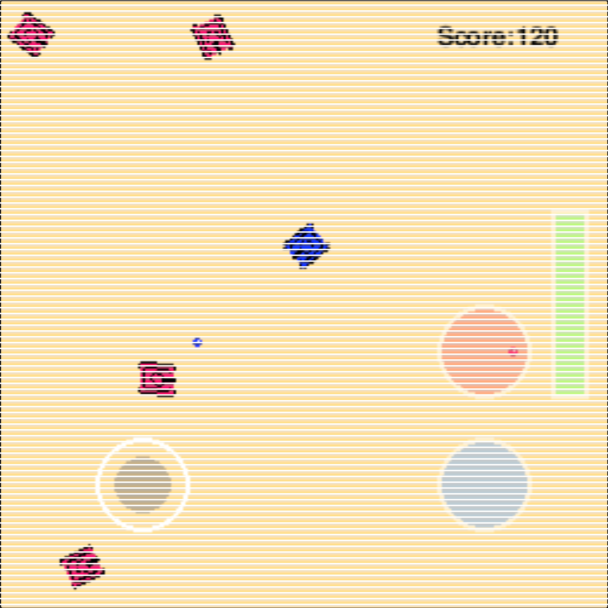
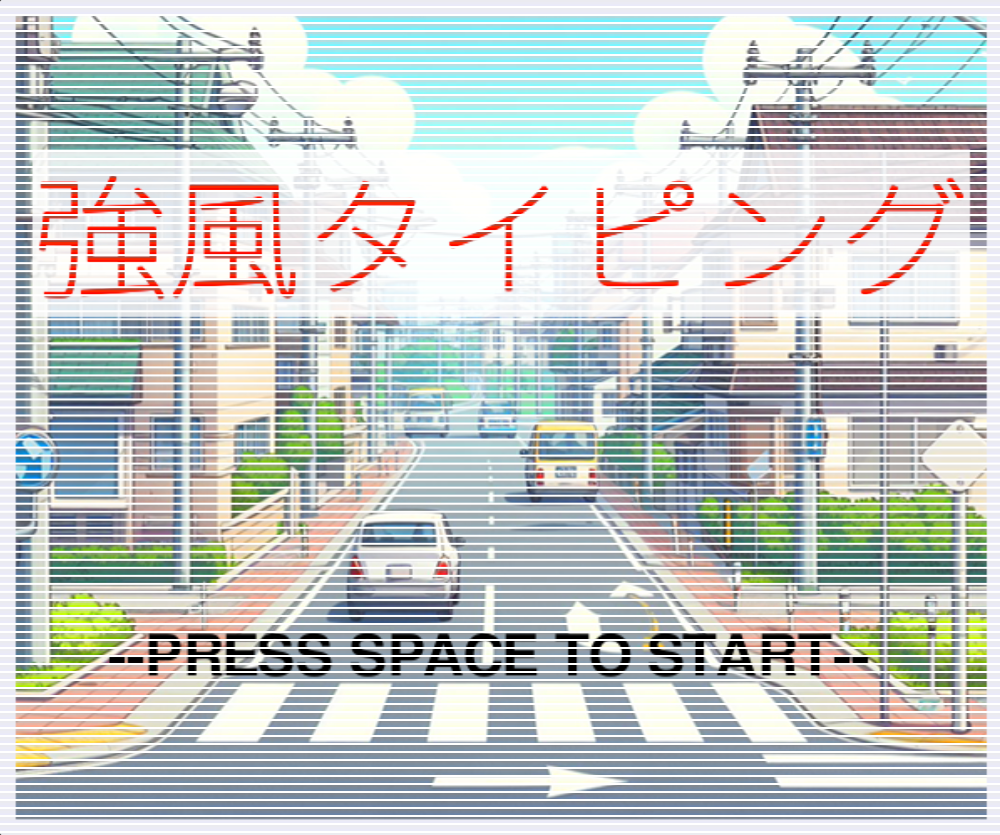
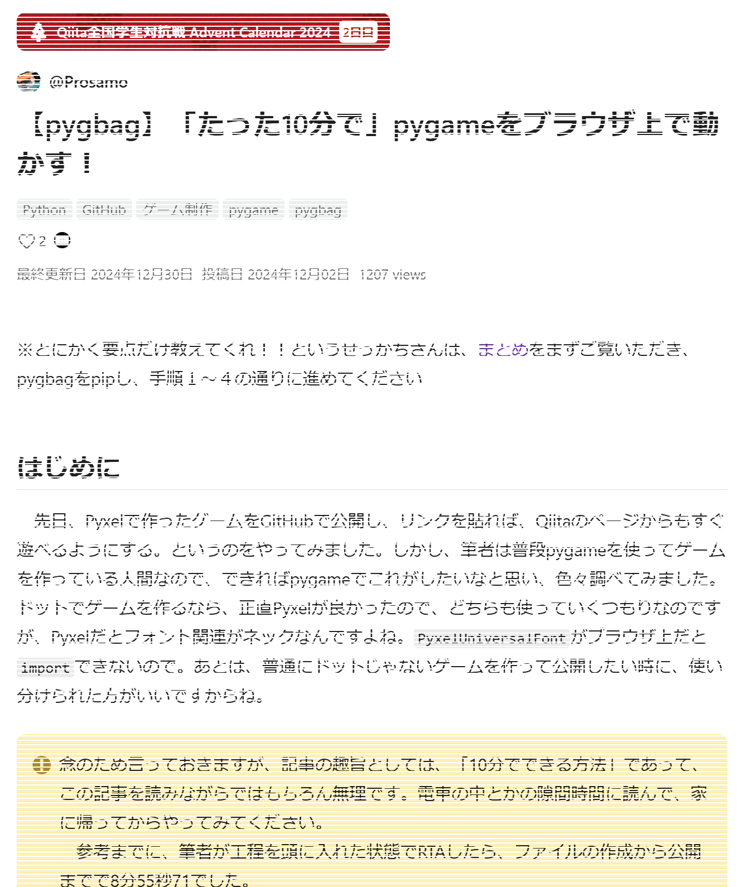
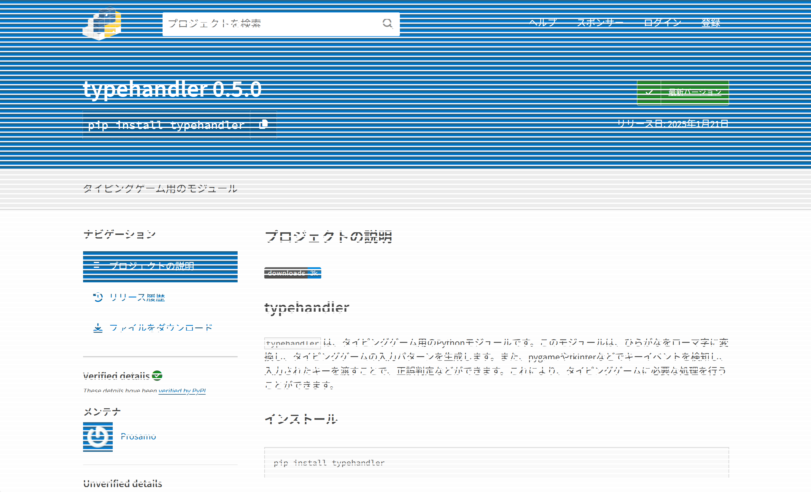
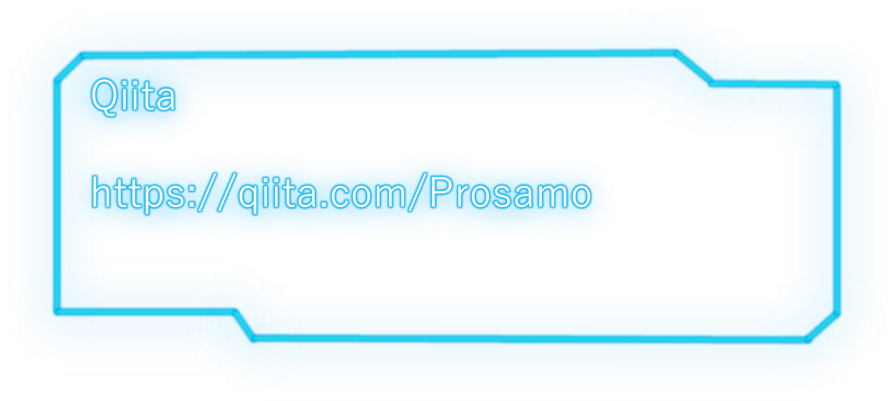
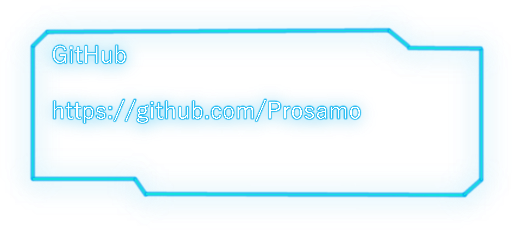
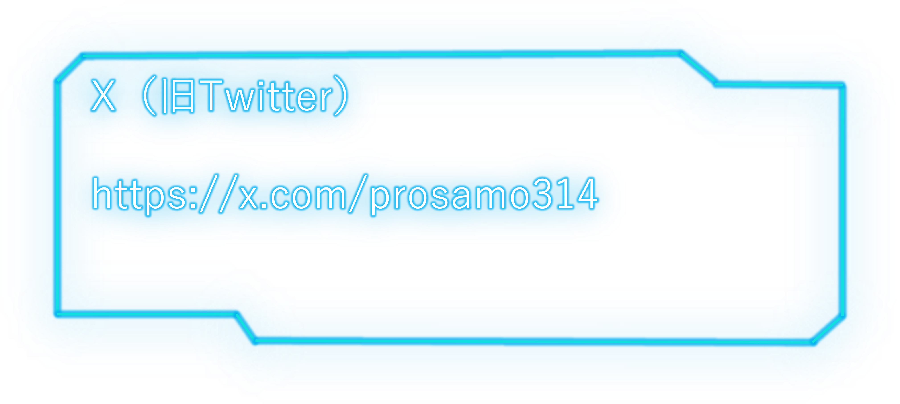

About Me
Projects
My Accounts
About Me
Projects

pygameで作ったシンプルなゲームです。シューティングゲームに方向を導入することで、簡単に組める範疇でも、ある程度のゲーム性を追求しました。また、弾を5発消費すると、ビームを撃てるようにしてあるのですが、こちらはゲーム性の向上だけでなく、画面を揺らす演出などのこだわりポイントがあります。画像を押すとゲームのリンクに飛べるので、ぜひプレイしてみてください。（スマートフォンでのプレイをお勧めします）

pygameで作ったタイピングゲームです。後ほど紹介しますが、タイピングゲームの処理部分を全て行うモジュールを自作したので、処理は全て流用です。このゲームは、自分でお題を決めてタイピングゲームがしたいという単純な目的で作ったものです。ただし、公開にあたって何かしらの差別化をしたいと考え、「瞬間のタイピング速度」という概念を導入しました。強風というコンセプトに上手く落とし込む都合上、直接この数値をリザルトには表示していませんが、最大瞬間風速というのが、「瞬間のタイピング速度」の2倍の値に設定してあります。こちらもぜひプレイして確かめて下さい。

上記のゲームは、pygbagというモジュールを使って公開したものです。海外の人が作ったものなので、日本ではあまり知名度がありません。そのため、使い方のガイドも全て英語の文献を読みました。その過程をまとめ、おそらく日本初のpygbagの使い方を解説した記事が、この画像のものになります。

タイピングゲームを簡単に実装するためのPythonモジュールです。日本語、英数字、記号に対応しています。2025年中にDL数10000を目指し、アップデートと宣伝を続けています。機能を追加していく上で、自分向けのツールとは違った点を意識する機会となりました。以前までのバージョンと互換性を持たせるため、メソッドの変更で安易に引数を変更しないようにしたり、処理の部分をプライベートメソッドとし、エラーハンドリングを付けたものをユーザーに提供する工夫をしました。
My Accounts


